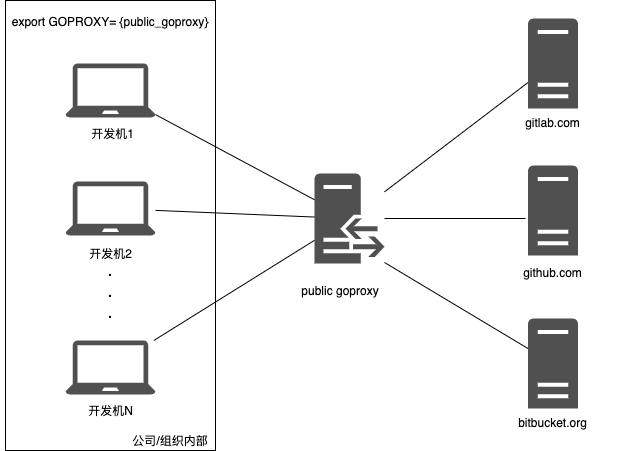
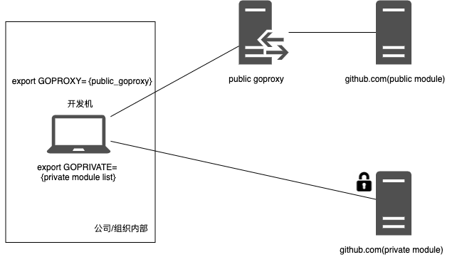
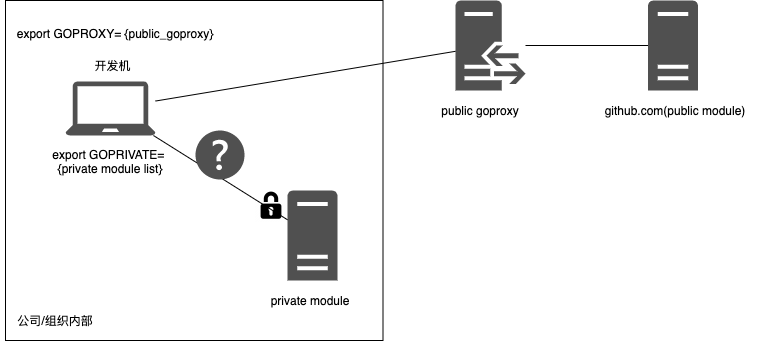
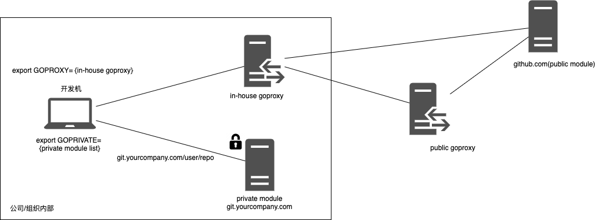
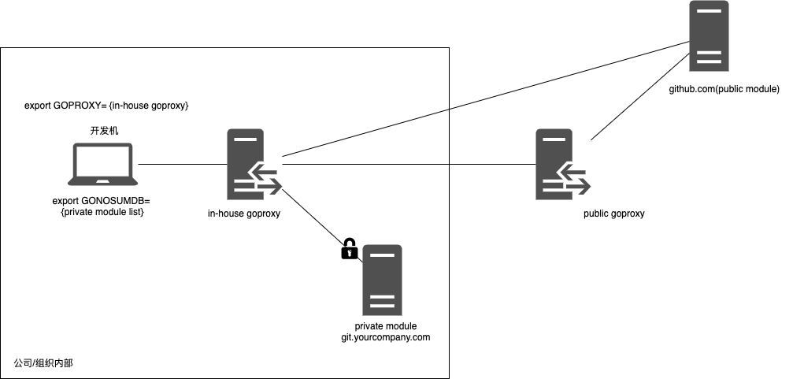
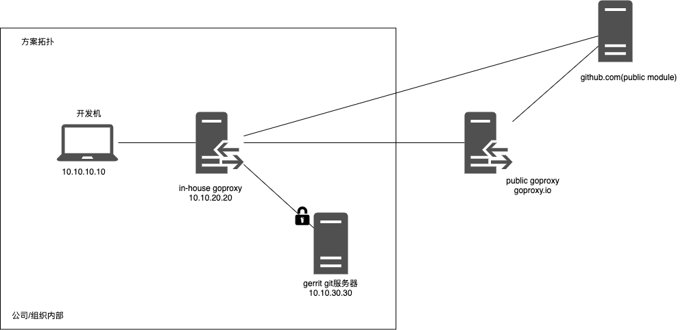
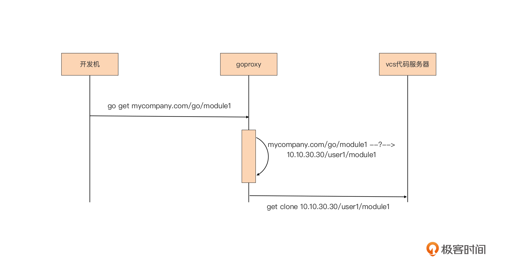
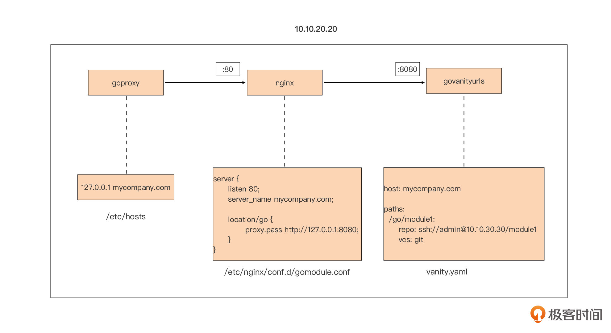

- 00 开篇词 这样入门Go，才能少走弯路.md.html
- 01 前世今生：你不得不了解的Go的历史和现状.md.html
- 02 拒绝“Hello and Bye”：Go语言的设计哲学是怎么一回事？.md.html
- 03 配好环境：选择一种最适合你的Go安装方法.md.html
- 04 初窥门径：一个Go程序的结构是怎样的？.md.html
- 05 标准先行：Go项目的布局标准是什么？.md.html
- 06 构建模式：Go是怎么解决包依赖管理问题的？.md.html
- 07 构建模式：Go Module的6类常规操作.md.html
- 08 入口函数与包初始化：搞清Go程序的执行次序.md.html
- 09 即学即练：构建一个Web服务就是这么简单.md.html
- 10 变量声明：静态语言有别于动态语言的重要特征.md.html
- 11 代码块与作用域：如何保证变量不会被遮蔽？.md.html
- 12 基本数据类型：Go原生支持的数值类型有哪些？.md.html
- 13 基本数据类型：为什么Go要原生支持字符串类型？.md.html
- 14 常量：Go在“常量”设计上的创新有哪些？.md.html
- 15 同构复合类型：从定长数组到变长切片.md.html
- 16 复合数据类型：原生map类型的实现机制是怎样的？.md.html
- 17 复合数据类型：用结构体建立对真实世界的抽象.md.html
- 18 控制结构：if的“快乐路径”原则.md.html
- 19 控制结构：Go的for循环，仅此一种.md.html
- 20 控制结构：Go中的switch语句有哪些变化？.md.html
- 21 函数：请叫我“一等公民”.md.html
- 22 函数：怎么结合多返回值进行错误处理？.md.html
- 23 函数：怎么让函数更简洁健壮？.md.html
- 24 方法：理解“方法”的本质.md.html
- 25 方法：方法集合与如何选择receiver类型？.md.html
- 26 方法：如何用类型嵌入模拟实现“继承”？.md.html
- 27 即学即练：跟踪函数调用链，理解代码更直观.md.html
- 28 接口：接口即契约.md.html
- 29 接口：为什么nil接口不等于nil？.md.html
- 30 接口：Go中最强大的魔法.md.html
- 31 并发：Go的并发方案实现方案是怎样的？.md.html
- 32 并发：聊聊Goroutine调度器的原理.md.html
- 33 并发：小channel中蕴含大智慧.md.html
- 34 并发：如何使用共享变量？.md.html
- 35 即学即练：如何实现一个轻量级线程池？.md.html
- 36 打稳根基：怎么实现一个TCP服务器？（上）.md.html
- 37 代码操练：怎么实现一个TCP服务器？（中）.md.html
- 38 成果优化：怎么实现一个TCP服务器？（下）.md.html
- 39 驯服泛型：了解类型参数.md.html
- 40 驯服泛型：定义泛型约束.md.html
- 41 驯服泛型：明确使用时机.md.html
- 元旦快乐 这是一份暂时停更的声明.md.html
- 加餐 作为Go Module的作者，你应该知道的几件事.md.html
- 加餐 如何拉取私有的Go Module？.md.html
- 加餐 我“私藏”的那些优质且权威的Go语言学习资料.md.html
- 加餐 聊聊Go 1.17版本的那些新特性.md.html
- 加餐 聊聊Go语言的指针.md.html
- 加餐 聊聊最近大热的Go泛型.md.html
- 大咖助阵 叶剑峰：Go语言中常用的那些代码优化点.md.html
- 大咖助阵 大明：Go泛型，泛了，但没有完全泛.md.html
- 大咖助阵 孔令飞：从小白到“老鸟”，我的Go语言进阶之路.md.html
- 大咖助阵 徐祥曦：从销售到分布式存储工程师，我与 Go 的故事.md.html
- 大咖助阵 曹春晖：聊聊 Go 语言的 GC 实现.md.html
- 大咖助阵 海纳：聊聊语言中的类型系统与泛型.md.html
- 期中测试 一起检验下你的学习成果吧.md.html
- 用户故事 罗杰：我的Go语言学习之路.md.html
- 结束语 和你一起迎接Go的黄金十年.md.html
- 结课测试 快来检验下你的学习成果吧！.md.html
- 捐赠
加餐 如何拉取私有的Go Module？
你好，我是Tony Bai。
我们这门课程上线以来收到了同学们的众多留言与热烈反馈，在这些留言和反馈中，有关Go Module的问题占比比较大，其中又以下面这两个问题比较突出：
- 在某module尚未发布到类似GitHub这样的网站前，如何import这个本地的module？
- 如何拉取私有module？
借这次加餐机会，今天我就针对这两个问题和你聊聊我知道的一些解决方案。
首先我们先来看第一个问题：如何导入本地的module。
导入本地module
在前面的06和07讲，我们已经系统讲解了Go Module构建模式。Go Module从Go 1.11版本开始引入到Go中，现在它已经成为了Go语言的依赖管理与构建的标准，因此，我也一直建议你彻底抛弃Gopath构建模式，全面拥抱Go Module构建模式。并且，这门课中的所有例子和实战小项目，我使用的都是Go Module构建模式。
当我们的项目依赖已发布在GitHub等代码托管站点的公共Go Module时，Go命令工具可以很好地完成依赖版本选择以及Go Module拉取的工作。
不过，如果我们的项目依赖的是本地正在开发、尚未发布到公共站点上的Go Module，那么我们应该如何做呢？我们来看一个例子。
假设你有一个项目，这个项目中的module a依赖module b，而module b是你另外一个项目中的module，它本来是要发布到github.com/user/b上的。
但此时此刻，module b还没有发布到公共托管站点上，它源码还在你的开发机器上。也就是说，go命令无法在github.com/user/b上找到并拉取module a的依赖module b，这时，如果你针对module a所在项目使用go mod tidy命令，就会收到类似下面这样的报错信息：
$go mod tidy
go: finding module for package github.com/user/b
github.com/user/a imports
github.com/user/b: cannot find module providing package github.com/user/b: module github.com/user/b: reading https://goproxy.io/github.com/user/b/@v/list: 404 Not Found
server response:
not found: github.com/user/b@latest: terminal prompts disabled
Confirm the import path was entered correctly.
If this is a private repository, see https://golang.org/doc/faq#git_https for additional information.
这个时候，我们就可以借助go.mod的replace指示符，来解决这个问题。解决的步骤是这样的。
首先，我们需要在module a的go.mod中的require块中，手工加上这一条（这也可以通过go mod edit命令实现）：
require github.com/user/b v1.0.0
注意了，这里的v1.0.0版本号是一个“假版本号”，目的是满足go.mod中require块的语法要求。
然后，我们再在module a的go.mod中使用replace，将上面对module b v1.0.0的依赖，替换为本地路径上的module b:
replace github.com/user/b v1.0.0 => module b的本地源码路径
这样修改之后，go命令就会让module a依赖你本地正在开发、尚未发布到代码托管网站的module b的源码了。
而且，如果module b已经提交到类GitHub的站点上，但module b的作者正在本地开发新版本，那么上面这种方法，也同样适合module b的作者在本地测试验证module b的最新版本源码。
虽然“伪造”go.mod文件内容，可以解决上述这两个场景中的问题，但显然这种方法也是有“瑕疵”的。
首先，这个方法中，require指示符将github.com/user/b v1.0.0替换为一个本地路径下的module b的源码版本，但这个本地路径是因开发者环境而异的。
前面课程中我们讲过，go.mod文件通常是要上传到代码服务器上的，这就意味着，另外一个开发人员下载了这份代码后，极大可能是无法成功编译的，他要想完成module a的编译，就得将replace后面的本地路径改为适配自己环境下的路径。
于是，每当开发人员pull代码后，第一件事就是要修改module a的go.mod中的replace块，每次上传代码前，可能也要将replace路径复原，这是一个很糟心的事情。但即便如此，目前Go版本（最新为Go 1.17.x）也没有一个完美的应对方案。
针对这个问题，Go核心团队在Go社区的帮助下，在预计2022年2月发布的Go 1.18版本中加入了Go工作区（Go workspace，也译作Go工作空间）辅助构建机制。
基于这个机制，我们可以将多个本地路径放入同一个workspace中，这样，在这个workspace下各个module的构建将优先使用workspace下的module的源码。工作区配置数据会放在一个名为go.work的文件中，这个文件是开发者环境相关的，因此并不需要提交到源码服务器上，这就解决了上面“伪造go.mod”方案带来的那些问题。
不过，Go 1.18版本尚未发布，我这里就不再深入讲解了Go workspace机制了，如果你有兴趣，可以去下载Go 1.18 Beta1版本抢先体验。
接下来，我们再来看看拉取私有module的可行解决方案。
拉取私有module的需求与参考方案
Go 1.11版本引入Go Module构建模式后，用Go命令拉取项目依赖的公共Go Module，已不再是“痛点”，我们只需要在每个开发机上为环境变量GOPROXY，配置一个高效好用的公共GOPROXY服务，就可以轻松拉取所有公共Go Module了：

但随着公司内Go使用者和Go项目的增多，“重造轮子”的问题就出现了。抽取公共代码放入一个独立的、可被复用的内部私有仓库成为了必然，这样我们就有了拉取私有Go Module的需求。
一些公司或组织的所有代码，都放在公共vcs托管服务商那里（比如github.com），私有Go Module则直接放在对应的公共vcs服务的private repository（私有仓库）中。如果你的公司也是这样，那么拉取托管在公共vcs私有仓库中的私有Go Module，也很容易，见下图：

也就是说，只要我们在每个开发机上，配置公共GOPROXY服务拉取公共Go Module，同时再把私有仓库配置到GOPRIVATE环境变量，就可以了。这样，所有私有module的拉取，都会直连代码托管服务器，不会走GOPROXY代理服务，也不会去GOSUMDB服务器做Go包的hash值校验。
当然，这个方案有一个前提，那就是每个开发人员都需要具有访问公共vcs服务上的私有Go Module仓库的权限，凭证的形式不限，可以是basic auth的user和password，也可以是personal access token（类似GitHub那种），只要按照公共vcs的身份认证要求提供就可以了。
不过，更多的公司/组织，可能会将私有Go Module放在公司/组织内部的vcs（代码版本控制）服务器上，就像下面图中所示：

那么这种情况，我们该如何让Go命令，自动拉取内部服务器上的私有Go Module呢？这里给出两个参考方案。
第一个方案是通过直连组织公司内部的私有Go Module服务器拉取。

在这个方案中，我们看到，公司内部会搭建一个内部goproxy服务（也就是上图中的in-house goproxy）。这样做有两个目的，一是为那些无法直接访问外网的开发机器，以及ci机器提供拉取外部Go Module的途径，二来，由于in-house goproxy的cache的存在，这样做还可以加速公共Go Module的拉取效率。
另外，对于私有Go Module，开发机只需要将它配置到GOPRIVATE环境变量中就可以了，这样，Go命令在拉取私有Go Module时，就不会再走GOPROXY，而会采用直接访问vcs（如上图中的git.yourcompany.com）的方式拉取私有Go Module。
这个方案十分适合内部有完备IT基础设施的公司。这类型的公司内部的vcs服务器都可以通过域名访问（比如git.yourcompany.com/user/repo），因此，公司内部员工可以像访问公共vcs服务那样，访问内部vcs服务器上的私有Go Module。
第二种方案，是将外部Go Module与私有Go Module都交给内部统一的GOPROXY服务去处理：

在这种方案中，开发者只需要把GOPROXY配置为in-house goproxy，就可以统一拉取外部Go Module与私有Go Module。
但由于go命令默认会对所有通过goproxy拉取的Go Module，进行sum校验（默认到sum.golang.org)，而我们的私有Go Module在公共sum验证server中又没有数据记录。因此，开发者需要将私有Go Module填到GONOSUMDB环境变量中，这样，go命令就不会对其进行sum校验了。
不过这种方案有一处要注意：in-house goproxy需要拥有对所有private module所在repo的访问权限，才能保证每个私有Go Module都拉取成功。
你可以对比一下上面这两个参考方案，看看你更倾向于哪一个，我推荐第二个方案。在第二个方案中，我们可以将所有复杂性都交给in-house goproxy这个节点，开发人员可以无差别地拉取公共module与私有module，心智负担降到最低。
那么我们该怎么实现这个方案呢？接下来我就来分析一个可行的实现思路与具体步骤。
统一Goproxy方案的实现思路与步骤
我们先为后续的方案实现准备一个示例环境，它的拓扑如下图：

选择一个GOPROXY实现
Go module proxy协议规范发布后，Go社区出现了很多成熟的Goproxy开源实现，比如有最初的athens，还有国内的两个优秀的开源实现：goproxy.cn和goproxy.io等。其中，goproxy.io在官方站点给出了企业内部部署的方法，所以今天我们就基于goproxy.io来实现我们的方案。
我们在上图中的in-house goproxy节点上执行这几个步骤安装goproxy：
$mkdir ~/.bin/goproxy
$cd ~/.bin/goproxy
$git clone https://github.com/goproxyio/goproxy.git
$cd goproxy
$make
编译后，我们会在当前的bin目录（~/.bin/goproxy/goproxy/bin）下看到名为goproxy的可执行文件。
然后，我们建立goproxy cache目录：
$mkdir /root/.bin/goproxy/goproxy/bin/cache
再启动goproxy：
$./goproxy -listen=0.0.0.0:8081 -cacheDir=/root/.bin/goproxy/goproxy/bin/cache -proxy https://goproxy.io
goproxy.io: ProxyHost https://goproxy.io
启动后，goproxy会在8081端口上监听（即便不指定，goproxy的默认端口也是8081），指定的上游goproxy服务为goproxy.io。
不过要注意下：goproxy的这个启动参数并不是最终版本的，这里我仅仅想验证一下goproxy是否能按预期工作。我们现在就来实际验证一下。
首先，我们在开发机上配置GOPROXY环境变量指向10.10.20.20:8081：
// .bashrc
export GOPROXY=http://10.10.20.20:8081
生效环境变量后，执行下面命令：
$go get github.com/pkg/errors
结果和我们预期的一致，开发机顺利下载了github.com/pkg/errors包。我们可以在goproxy侧，看到了相应的日志：
goproxy.io: ------ --- /github.com/pkg/@v/list [proxy]
goproxy.io: ------ --- /github.com/pkg/errors/@v/list [proxy]
goproxy.io: ------ --- /github.com/@v/list [proxy]
goproxy.io: 0.146s 404 /github.com/@v/list
goproxy.io: 0.156s 404 /github.com/pkg/@v/list
goproxy.io: 0.157s 200 /github.com/pkg/errors/@v/list
在goproxy的cache目录下，我们也看到了下载并缓存的github.com/pkg/errors包：
$cd /root/.bin/goproxy/goproxy/bin/cache
$tree
.
└── pkg
└── mod
└── cache
└── download
└── github.com
└── pkg
└── errors
└── @v
└── list
8 directories, 1 file
这就标志着我们的goproxy服务搭建成功，并可以正常运作了。
自定义包导入路径并将其映射到内部的vcs仓库
一般公司可能没有为vcs服务器分配域名，我们也不能在Go私有包的导入路径中放入ip地址，因此我们需要给我们的私有Go Module自定义一个路径，比如：mycompany.com/go/module1。我们统一将私有Go Module放在mycompany.com/go下面的代码仓库中。
那么，接下来的问题就是，当goproxy去拉取mycompany.com/go/module1时，应该得到mycompany.com/go/module1对应的内部vcs上module1 仓库的地址，这样，goproxy才能从内部vcs代码服务器上下载module1对应的代码，具体的过程如下：

那么我们如何实现为私有module自定义包导入路径，并将它映射到内部的vcs仓库呢？
其实方案不止一种，这里我使用了Google云开源的一个名为govanityurls的工具，来为私有module自定义包导入路径。然后，结合govanityurls和nginx，我们就可以将私有Go Module的导入路径映射为其在vcs上的代码仓库的真实地址。具体原理你可以看一下这张图：

首先，goproxy要想不把收到的拉取私有Go Module（mycompany.com/go/module1）的请求转发给公共代理，需要在其启动参数上做一些手脚，比如下面这个就是修改后的goproxy启动命令：
$./goproxy -listen=0.0.0.0:8081 -cacheDir=/root/.bin/goproxy/goproxy/bin/cache -proxy https://goproxy.io -exclude "mycompany.com/go"
这样，凡是与-exclude后面的值匹配的Go Module拉取请求，goproxy都不会转给goproxy.io，而是直接请求Go Module的“源站”。
而上面这张图中要做的，就是将这个“源站”的地址，转换为企业内部vcs服务中的一个仓库地址。然后我们假设mycompany.com这个域名并不存在（很多小公司没有内部域名解析能力），从图中我们可以看到，我们会在goproxy所在节点的/etc/hosts中加上这样一条记录：
127.0.0.1 mycompany.com
这样做了后，goproxy发出的到mycompany.com的请求实际上是发向了本机。而上面这图中显示，监听本机80端口的正是nginx，nginx关于mycompany.com这一主机的配置如下：
// /etc/nginx/conf.d/gomodule.conf
server {
listen 80;
server_name mycompany.com;
location /go {
proxy_pass http://127.0.0.1:8080;
proxy_redirect off;
proxy_set_header Host $host;
proxy_set_header X-Real-IP $remote_addr;
proxy_set_header X-Forwarded-For $proxy_add_x_forwarded_for;
proxy_http_version 1.1;
proxy_set_header Upgrade $http_upgrade;
proxy_set_header Connection "upgrade";
}
}
我们看到，对于路径为mycompany.com/go/xxx的请求，nginx将请求转发给了127.0.0.1:8080，而这个服务地址恰恰就是govanityurls工具监听的地址。
govanityurls这个工具，是前Go核心开发团队成员Jaana B.Dogan开源的一个工具，这个工具可以帮助Gopher快速实现自定义Go包的go get导入路径。
govanityurls本身，就好比一个“导航”服务器。当go命令向自定义包地址发起请求时，实际上是将请求发送给了govanityurls服务，之后，govanityurls会将请求中的包所在仓库的真实地址（从vanity.yaml配置文件中读取）返回给go命令，后续go命令再从真实的仓库地址获取包数据。
注：govanityurls的安装方法很简单，直接go install/go get github.com/GoogleCloudPlatform/govanityurls就可以了。- 在我们的示例中，vanity.yaml的配置如下：
host: mycompany.com
paths:
/go/module1:
repo: ssh://[email protected]/module1
vcs: git
也就是说，当govanityurls收到nginx转发的请求后，会将请求与vanity.yaml中配置的module路径相匹配，如果匹配ok，就会将该module的真实repo地址，通过go命令期望的应答格式返回。在这里我们看到，module1对应的真实vcs上的仓库地址为：ssh://[email protected]/module1。
所以，goproxy会收到这个地址，并再次向这个真实地址发起请求，并最终将module1缓存到本地cache并返回给客户端。
开发机(客户端)的设置
前面示例中，我们已经将开发机的GOPROXY环境变量，设置为goproxy的服务地址。但我们说过，凡是通过GOPROXY拉取的Go Module，go命令都会默认把它的sum值放到公共GOSUM服务器上去校验。
但我们实质上拉取的是私有Go Module，GOSUM服务器上并没有我们的Go Module的sum数据。这样就会导致go build命令报错，无法继续构建过程。
因此，开发机客户端还需要将mycompany.com/go，作为一个值设置到GONOSUMDB环境变量中：
export GONOSUMDB=mycompany.com/go
这个环境变量配置一旦生效，就相当于告诉go命令，凡是与mycompany.com/go匹配的Go Module，都不需要在做sum校验了。
到这里，我们就实现了拉取私有Go Module的方案。
方案的“不足”
当然这个方案并不是完美的，它也有自己的不足的地方：
第一点：开发者还是需要额外配置GONOSUMDB变量。
由于Go命令默认会对从GOPROXY拉取的Go Module进行sum校验，因此我们需要将私有Go Module配置到GONOSUMDB环境变量中，这就给开发者带来了一个小小的“负担”。
对于这个问题，我的解决建议是：公司内部可以将私有go项目都放在一个特定域名下，这样就不需要为每个go私有项目单独增加GONOSUMDB配置了，只需要配置一次就可以了。
第二点：新增私有Go Module，vanity.yaml需要手工同步更新。
这是这个方案最不灵活的地方了，由于目前govanityurls功能有限，针对每个私有Go Module，我们可能都需要单独配置它对应的vcs仓库地址，以及获取方式（git、svn or hg）。
关于这一点，我的建议是：在一个vcs仓库中管理多个私有Go Module。相比于最初go官方建议的一个repo只管理一个module，新版本的go在一个repo下管理多个Go Module方面，已经有了长足的进步，我们已经可以通过repo的tag来区别同一个repo下的不同Go Module。
不过对于一个公司或组织来说，这点额外工作与得到的收益相比，应该也不算什么！
第三点：无法划分权限。
在讲解上面的方案的时候我们也提到过，goproxy所在节点需要具备访问所有私有Go Module所在vcs repo的权限，但又无法对go开发者端做出有差别授权，这样，只要是goproxy能拉取到的私有Go Module，go开发者都能拉取到。
不过对于多数公司而言，内部所有源码原则上都是企业内部公开的，这个问题似乎也不大。如果觉得这是个问题，那么只能使用前面提到的第一个方案，也就是直连私有Go Module的源码服务器的方案了。
小结
好了，今天的加餐讲到这里就结束了。今天我们针对前期专栏反馈较多的有关Go Module的两个问题，进行了逐一分析，给出了各自的可行的方案。
针对导入本地Go Module的问题，在Go 1.18版本未发布之前，最好的方法就是使用replace“大法”，通过“伪造”的go.mod让go命令优先使用项目依赖的Go Module的本地版本。不过这个方案，也会给开发人员协作方面带去一些额外负担，要想完美解决这一问题，还需要等待加入了Go工作区机制的Go 1.18版本。
无论大厂小厂，对Go的使用逐渐深入，接纳Go的人以及Go项目逐渐增多后，拉取私有Go Module这样的问题肯定会摆到桌面上来。这一讲我们介绍了直连私有Go Module源码服务器和使用统一GOPROXY代理两种方案，我推荐你使用第二种方案，可以降低开发人员拉取私有module的心智负担。
思考题
针对我们这一讲提到的两个问题，你是否有自己的不同的解决方案呢？如果有，欢迎在留言区分享一下你采用的方案。
欢迎把这一节课分享给更多感兴趣的朋友。我是Tony Bai，我们下节课见。
© 2019 - 2023 Liangliang Lee. Powered by gin and hexo-theme-book.